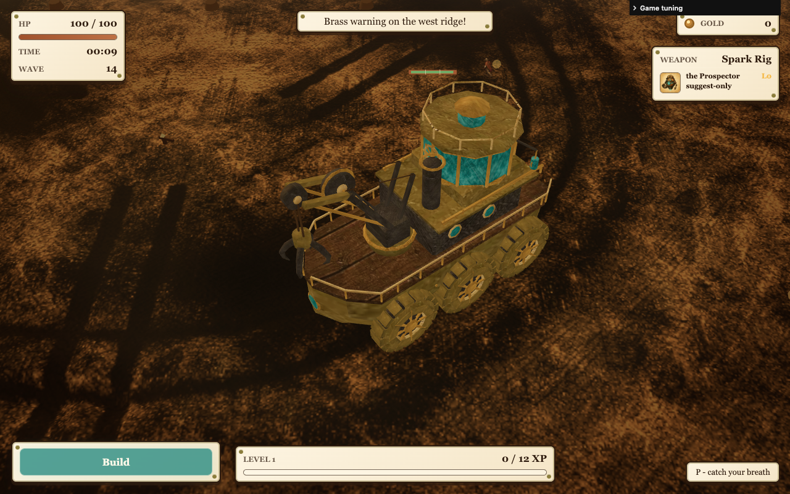
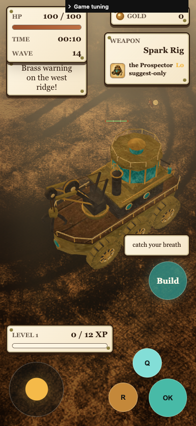
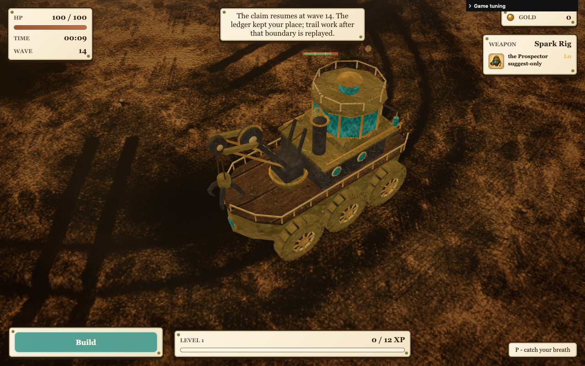

Actual runtime captures. Desktop default zoom; mobile existing 1.6 zoom-out. Source concept remains more detailed. Damage is subtle; mobile HUD overlaps some wheel area.



Verification report and limitations